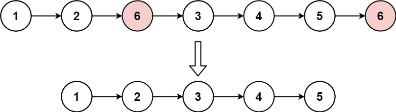

203. 移除链表元素
哨兵结点挡在头前，遍历时「下一个值等于 val 就跨过它」，否则前进；返回哨兵的 next。
思路
- 删除结点要改前驱的
next；头结点没有前驱，加个哨兵dummy统一处理，不用单独判头。 cur始终停在「已确认保留」的结点上：cur.next.val == val就cur.next = cur.next.next（原地摘掉，cur不动，可能连续删）；否则cur前进。- 返回
dummy.next——头被删空时它自然是null。
图解
最优解
1class Solution {2 public ListNode removeElements(ListNode head, int val) {3 ListNode dummy = new ListNode(0, head); // 哨兵：头结点也可能被删，统一成「删前驱的 next」4 ListNode cur = dummy;5 while (cur.next != null) {6 if (cur.next.val == val) cur.next = cur.next.next; // 跨过要删的结点7 else cur = cur.next;8 }9 return dummy.next;10 }11}题目
给你一个链表的头节点
head 和一个整数 val ，请你删除链表中所有满足 Node.val == val 的节点，并返回 新的头节点 。
示例 1：

输入：head = [1,2,6,3,4,5,6], val = 6 输出：[1,2,3,4,5]
示例 2：
输入：head = [], val = 1 输出：[]
示例 3：
输入：head = [7,7,7,7], val = 7 输出：[]
提示：
- 列表中的节点数目在范围
[0, 104]内 1 <= Node.val <= 500 <= val <= 50
题面取自力扣当前版本。
数据快照 2026-11-04。题面版权归力扣所有，本站点仅供本人学习使用，请勿对外发布。